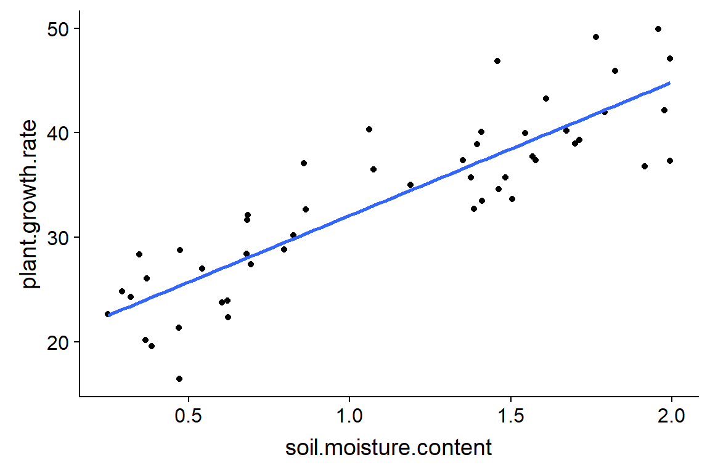

À partir de cette semaine, les laboratoires auront lieu au D-306 (plutôt que D-304).
Le deuxième laboratoire évalué (ANOVA) est dû mercredi le 24 octobre à 17h.
Modèles qui représentent la relation mathématique entre une variable réponse et une ou plusieurs prédicteurs.
Analyser les résultats d’une expérience avec une ou plusieurs variables de traitement numériques (ex.: température, dose).
Séparer l’effet de traitements discrets (variables catégorielles) de celui d’autres conditions expérimentales représentées par des variables numériques (analyse de la covariance).
Déterminer l’importance des associations entre des variables mesurées dans la nature (sans supposer de lien de causalité).
Utiliser les associations entre prédicteurs et réponse afin de prédire la valeur de cette dernière pour de nouvelles observations.
| 15 octobre | Régression linéaire |
| 22 octobre | Sélection de modèles |
| 29 octobre | Congé |
| 5 novembre | Régression logistique |
| 12 novembre | Régression de poisson |
| 19 et 26 novembre | Modèles mixtes |
Estimer et interpréter les paramètres d’une régression linéaire simple et ceux d’une régression linéaire multiple, avec ou sans interactions.
Vérifier les suppositions d’un modèle de régression à partir des graphiques de diagnostic.
Différencier l’intervalle de confiance d’une droite de régression et l’intervalle de prédiction de nouvelles observations.
Identifier les problèmes dûs à la collinéarité de plusieurs prédicteurs.
Désigne le cas où il y a un seul prédicteur numérique (\(x\)).
\[ y = \beta_0 + \beta_1 x + \epsilon \]
Tableau de données plant_growth_rate tiré du livre Getting Started with R, An Introduction for Biologists: croissance de plantes en fonction de l’humidité du sol.
pgr <- read.csv("../donnees/plant_growth_rate.csv")
str(pgr)## 'data.frame': 50 obs. of 2 variables:
## $ soil.moisture.content: num 0.47 0.541 1.698 0.826 0.857 ...
## $ plant.growth.rate : num 21.3 27 39 30.2 37.1 ...But: Trouver la droite qui passe le plus “près” des points du graphique de \(y\) vs. \(x\).

\[ \sum_{k = 1}^n \epsilon_k^2 = \sum_{k = 1}^n (y_k - (\beta_0 + \beta_1 x_k))^2 \]
\[\hat{\beta_1} = \frac{\sum_{k = 1}^n (x_k - \bar{x})(y_k - \bar{y})}{\sum_{k = 1}^n (x_k - \bar{x})^2}\]
\[\hat{\beta_0} = \bar{y} - \hat{\beta_1} \bar{x}\]
\[ R^2 = 1 - \frac{\sum_{k=1}^n (y_k - \hat{y_k})^2}{\sum_{k=1}^n (y_k - \bar{y})^2} \]
Intervalle de confiance de la droite de régression: représente l’incertitude sur la valeur moyenne de la réponse pour une certaine valeur du prédicteur.
Intervalle de prédiction: représente l’incertitude sur la valeur de la réponse pour une nouvelle observation, en connaissant la valeur des prédicteurs.
Il n’est pas prudent d’utiliser le résultat d’une régression pour prédire la réponse hors de l’étendue des valeurs des prédicteurs présentes dans les données.
Comme pour l’ANOVA, les résidus sont:
En plus:
Une transformation peut convertir un modèle non-linéaire en modèle linéaire.
Exemple: Transformation logarithmique
\[ y = a x^b \]
\[ \log(y) = a + b \log(x) \]
L’équation reliant \(x\) et \(y\) peut contenir des fonctions non-linéaires de \(x\), en autant qu’elle soit une fonction linéaire des coefficients.
Exemple: Modèle quadratique
\[ y = \beta_0 + \beta_1 x + \beta_2 x^2 \]
La portion des observations \(y\) non-expliquée par les prédicteurs \(x\) est indépendante d’une observation à l’autre.
La non-indépendance des résidus est souvent due à une proximité de certaines observations dans l’espace et dans le temps.
Une solution possible est d’inclure dans le modèle les facteurs pouvant causer cette dépendance temporelle et spatiale.
La non-indépendance des résidus ne biaise pas les estimés des coefficients du modèle, mais leur incertitude sera sous-estimée. Les intervalles de confiance et les tests d’hypothèse sur la significativité des coefficients ne seront pas valides.
Pour le graphique des résidus vs. valeurs attendues (residuals vs. fitted):
Les résidus sont-ils disperés aléatoirement autour de zéro?
La variance des résidus est-elle approximativement constante le long de l’axe des \(x\)?
Une observation avec un fort effet de levier (leverage) a une plus grande influence sur les coefficients de la régression.
Le plus souvent, l’observation est isolée et loin de la moyenne des prédicteurs.
La distance de Cook (Cook’s distance) \(D\) mesure à la fois l’effet de levier et la magnitude du résidu. Un point avec un grand \(D\) (\(D > 1\)) peut faire dévier la régression par rapport à la tendance des autres points.
\[ y = \beta_0 + \beta_1 x_1 + \beta_2 x_2 + ... + \beta_m x_m + \epsilon \]
\[ y = \beta_0 + \sum_{i = 1}^m \beta_i x_i + \epsilon \]
Les coefficients \(\beta\) sont estimés à partir de la méthode des moindres carrés.
Modèle incluant un prédicteur catégoriel et un prédicteur numérique.
Exemple: Le tableau de données compensation.csv tiré du livre de Crawley, Statistics: An introduction using R contient des données sur la masse des graines produites par une espèce de plante (Fruit) en fonction de la taille des racines (Root) et selon que la plante subisse ou non un pâturage (Grazing).
comp <- read.csv("../donnees/compensation.csv")
str(comp)## 'data.frame': 40 obs. of 3 variables:
## $ Root : num 6.22 6.49 4.92 5.13 5.42 ...
## $ Fruit : num 59.8 61 14.7 19.3 34.2 ...
## $ Grazing: Factor w/ 2 levels "Grazed","Ungrazed": 2 2 2 2 2 2 2 2 2 2 ...\[ y = \beta_0 + \beta_1 x_1 + \beta_2 x_2 + \beta_{12} x_1 x_2 + \epsilon \]
Exemple: Le tableau de données hills du package MASS contient les records de temps (time, en minutes) pour des courses de vélo en Écosse en fonction de la distance horizontale (dist, en milles) et le dénivelé total du parcours (climb, en pieds).
library(MASS)
str(hills)## 'data.frame': 35 obs. of 3 variables:
## $ dist : num 2.5 6 6 7.5 8 8 16 6 5 6 ...
## $ climb: int 650 2500 900 800 3070 2866 7500 800 800 650 ...
## $ time : num 16.1 48.4 33.6 45.6 62.3 ...Puisque les prédicteurs normalisés prennent une valeur de 0 à leur moyenne, la valeur de l’ordonnée à l’origine de la régression est la moyenne générale de la réponse.
La normalisation des prédicteurs ne fait que changer l’échelle des effets estimés. La significativité de l’effet de chaque prédicteur et les prédictions du modèle restent les mêmes.
\[ y = \beta_0 + \beta_1 x_1 + \beta_2 x_2 + \beta_{12} x_1 x_2 + \epsilon \]
La corrélation entre deux prédicteurs complique l’estimation des effets de chaque prédicteur.
Puisque les coefficients du modèle représente l’effet d’un prédicteur lorsque les autres demeurent constants, lorsque plusieurs d’entre eux varient ensemble, il devient difficile d’isoler l’effet de chacun.
Avec plus de deux prédicteurs, ce problème survient si l’un des prédicteurs est corrélé avec une combinaison linéaire des autres prédicteurs (collinéarité).
Le VIF est égal à \(1 - 1/R^2\), où \(R^2\) est le coefficient de détermination d’un modèle linéaire du prédicteur considéré en fonction de tous les autres.
Exemple: si un des prédicteurs peut être déterminé à partir de la valeur des autres avec un \(R^2\) de 0.9, VIF = 10.
Lorsque le VIF de certains prédicteurs dépasse 10, il est recommandé d’éliminer un des prédicteurs redondants.
Le tableau de données msleep inclus avec le package ggplot, contient des données sur le sommeil de différentes espèces de mammifères.
str(msleep)## Classes 'tbl_df', 'tbl' and 'data.frame': 83 obs. of 11 variables:
## $ name : chr "Cheetah" "Owl monkey" "Mountain beaver" "Greater short-tailed shrew" ...
## $ genus : chr "Acinonyx" "Aotus" "Aplodontia" "Blarina" ...
## $ vore : chr "carni" "omni" "herbi" "omni" ...
## $ order : chr "Carnivora" "Primates" "Rodentia" "Soricomorpha" ...
## $ conservation: chr "lc" NA "nt" "lc" ...
## $ sleep_total : num 12.1 17 14.4 14.9 4 14.4 8.7 7 10.1 3 ...
## $ sleep_rem : num NA 1.8 2.4 2.3 0.7 2.2 1.4 NA 2.9 NA ...
## $ sleep_cycle : num NA NA NA 0.133 0.667 ...
## $ awake : num 11.9 7 9.6 9.1 20 9.6 15.3 17 13.9 21 ...
## $ brainwt : num NA 0.0155 NA 0.00029 0.423 NA NA NA 0.07 0.0982 ...
## $ bodywt : num 50 0.48 1.35 0.019 600 ...La fonction lm effectue l’ajustement d’un modèle de régression linéaire dans R.
Dans une régression linéaire multiple (sans interaction), le coefficient associé à un prédicteur mesure l’effet d’une variation de 1 du prédicteur sur la réponse, si les autres prédicteurs demeurent constants.
Pour un modèle sans interaction, l’effet d’une variable catégorielle peut être représenté par une translation de la droite de régression entre les traitements.
Le facteur d’inflation de la variance (VIF) indique si la valeur d’un prédicteur est fortement corrélée à celles des autres prédicteurs. Un VIF élevé rend difficile l’estimation des coefficients pour les prédicteurs corrélés.
L’intervalle de confiance d’une droite de régression représente l’incertitude sur la valeur moyenne de \(y\) pour des valeurs données des prédicteurs. L’intervalle de prédiction représente l’incertitude sur la valeur d’une observation future de \(y\), connaissant la valeur des prédicteurs.